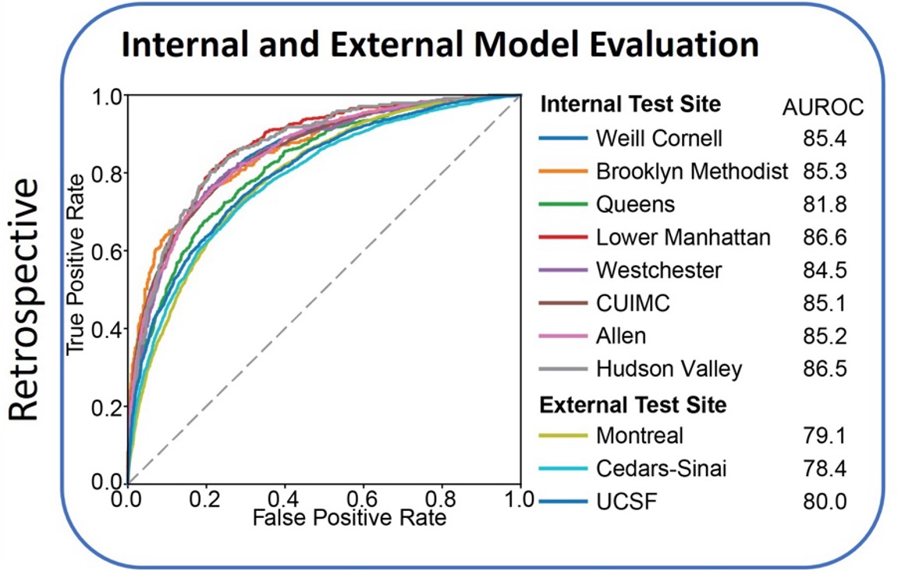
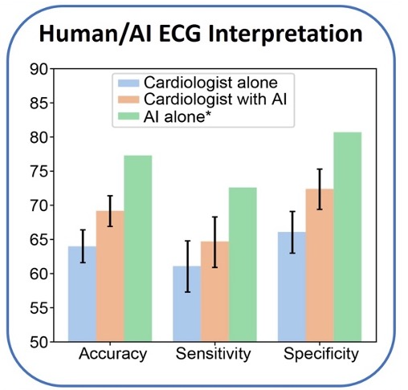
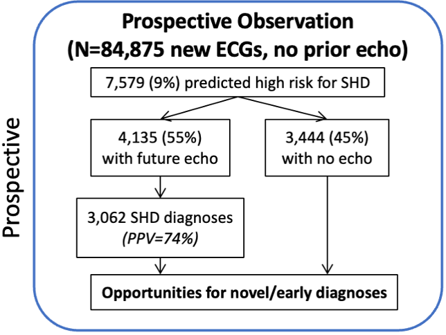
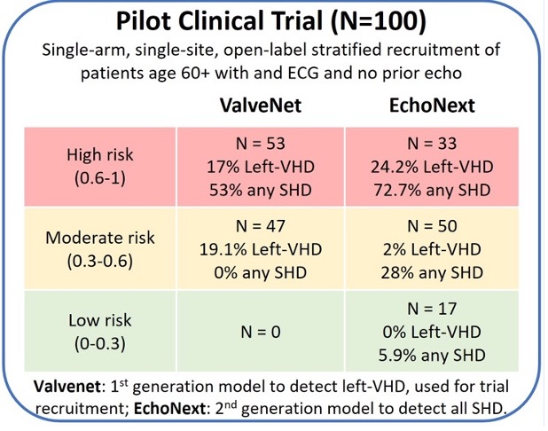

EchoNext
A Foundational AI-Based Screening Test for Cardiovascular Diseases
Early detection of structural heart disease (SHD), including cardiomyopathies and valvular disease, is a foundational goal of cardiology but cost and availability of gold-standard tools like echocardiography prohibit widespread screening. We present EchoNext, the first AI model to detect all causes of SHD, developed using 1,245,273 ECG-echocardiogram pairs from 8 hospitals and 190 clinics.
Key Features & Performance
- Broad Detection Capability: Identifies a range of SHDs, including cardiomyopathies and valvular diseases not previously detectable on ECG.
- High Accuracy: Achieved an area under the receiver operating characteristic curve (AUROC) of 85% in internal tests and 78-80% in external validation across multiple health systems.
- Comparison to Cardiologists: In a study involving 3,200 ECG interpretations by 13 attending cardiologists, EchoNext demonstrated higher accuracy (77%) compared to cardiologists at baseline (64%) and even when provided AI assistance (69%).
- Generalizability: Consistent performance across diverse patient demographics, clinical contexts, and numerous hospitals.
- Prospective Trial Success: In a 100-patient pilot study, 73% of high-risk patients identified by EchoNext were newly diagnosed with SHD.
- Silent Deployment Findings: In a real-world setting, EchoNext flagged 3,444 high-risk patients, 45% of whom did not receive follow-up echocardiography, highlighting gaps in clinical care.


Clinical Validation & Impact


The Country's Largest Cardiovascular AI Trial
These findings have led to the initiation of CACTUS, the largest cardiovascular AI randomized controlled trial in the U.S., set to evaluate the impact of AI-based ECG screening on SHD diagnosis among 54,000 patients across eight emergency departments in 2025.